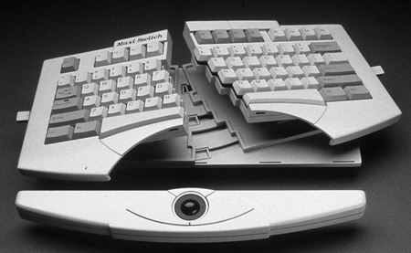
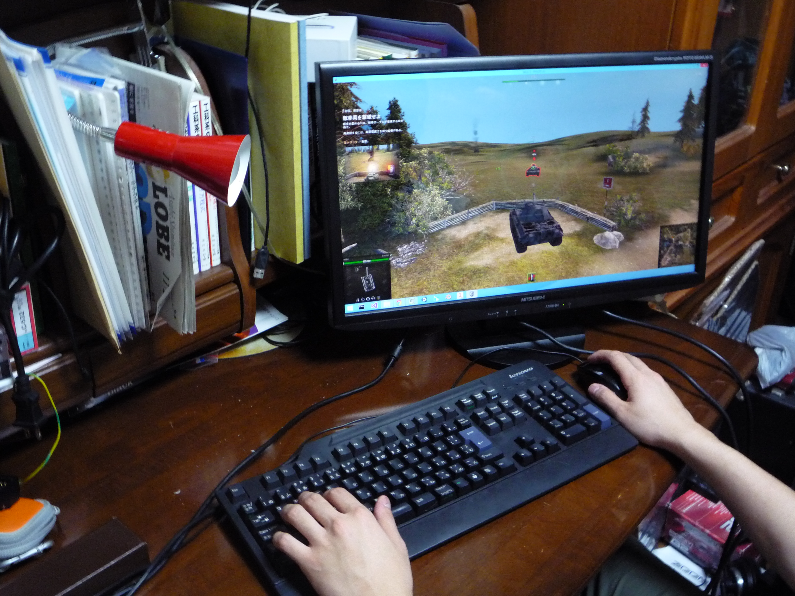
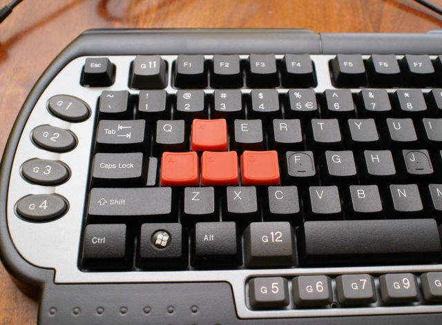
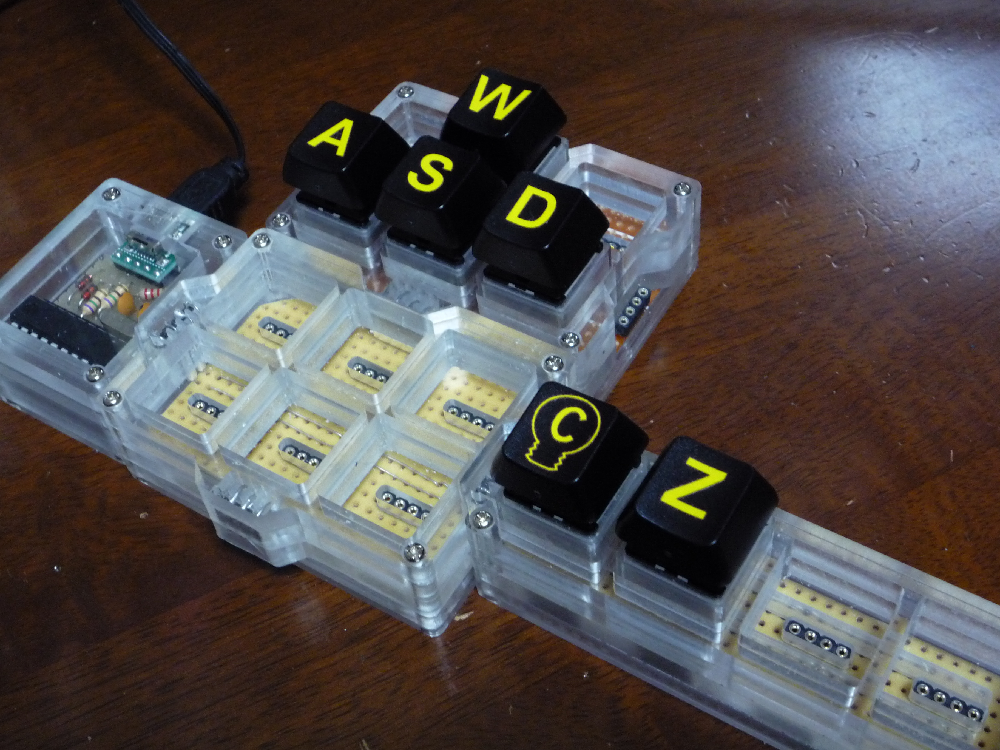
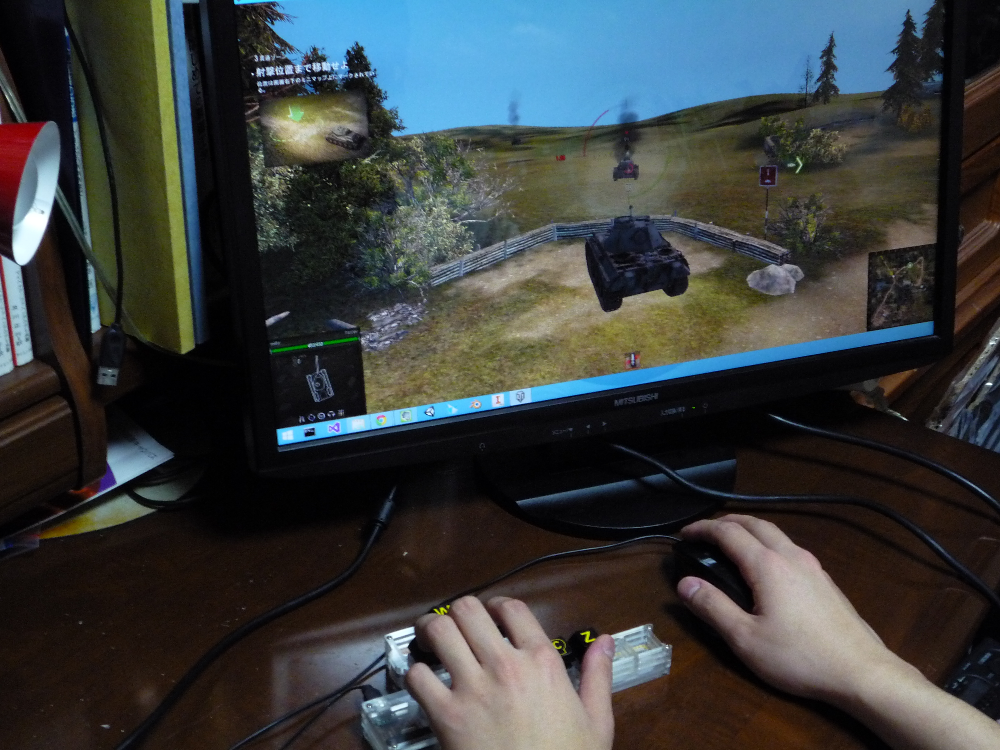
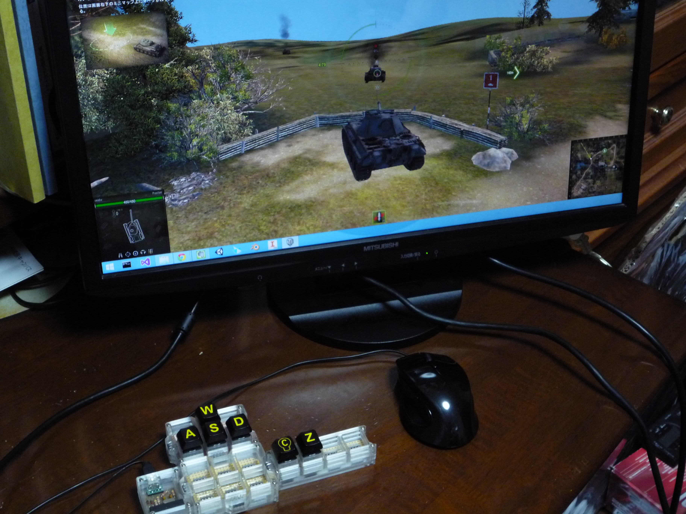

「Trickey」を使って自分だけのゲーミングキーボードを作ってみた
多くのPCゲームでは必要不可欠なキーボード。しかしながら市販のキーボードはゲーマーにとって不満な点が多く、初めからゲーム用に製造されたいわゆるゲーミングキーボードを使用する人が目立ちます。悩めるゲーマー諸氏のため今回は最近話題の組み換え可能なキーボード「Trickey」を使って、戦車FPSオンラインゲーム「World of Tanks(WoT)」のオリジナルなキーボードを作ってみました。
こちらは普通にWoTをプレイしている様子。

多くのFPSゲームでは移動がW,A,S,Dのキーに割り当てられています。こんな商品もあったりして。

ですがよ～く考えるとだいたいのゲームはこのWASDと、いくつかの固有のキーさえあればできてしまいます。WoTも然り、キーボード全部がある必要はないのです。
というわけで実際につくってみました。

今回はWASDの他にWoTでよく使われるC(リロード),Z(簡易チャット)を集めてみました。
通常のキーボードではCやZはWASDの真下にあって押しにくいため、ついつい押し間違えてアタフタしているうちに爆散なんてのもしばしば。しかし今回作成したWoTボードでは押しやすい位置に持ってくることができました。 もう言い訳できませんね！
実際にプレイしてみます。

なんということでしょう。あの汚かった操縦席がこんなにもすっきり。
こちらのTrickey、入力の遅延は10msec未満ということなのでレスポンスが要求されるゲームでも問題なく使えそうです。
ちなみに今回デモとしてプレイしたWorld of Tanks、基本無料でプレイできます。
・関連記事
自由にカスタマイズ可能なキーボード「Trickey」- MECHAZINE
「Trickey」を使うとペンタブ環境がこんなにすっきり - MECHAZINE